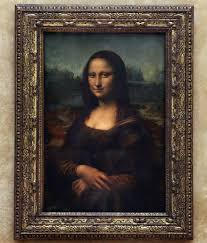
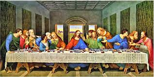
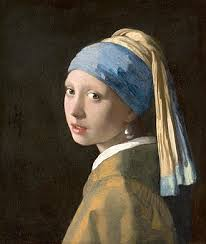
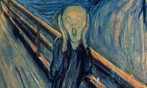

VIRTUAL ART GALLERY
Art is a diverse range of human activities involving the creation of visual, auditory, or performed artifacts—artworks—that express the creator's imagination, conceptual ideas, or technical skill, intended to be appreciated primarily for their beauty or emotional power.
Mona Lisa

The Mona Lisa is a half-length portrait painting by the Italian Renaissance artist Leonardo da Vinci.
Considered an archetypal masterpiece of the Italian Renaissance, it has been described as "the most famous, visited, talked about, sung about, and parodied work of art in the world".
The painting's novel qualities include the subject's enigmatic expression, the monumentality of the composition,
the subtle modeling of forms, and the atmospheric illusionism. The painting has been acclaimed as "the best known, the most visited, the most written about, the most sung about, the most parodied work of art in the world".
The Last Supper

The Last Supper is a late 15th-century mural painting by Italian artist Leonardo da Vinci housed by the refectory of the Convent of Santa Maria delle Grazie in Milan, Italy.
It is one of the Western world's most recognizable paintings. The work is believed to have been commissioned as part of a plan of renovations to the convent by Leonardo's patron Ludovico Sforza, Duke of Milan.
The Last Supper represents the scene of the Last Supper of Jesus with his apostles, as it is told in the Gospel of John 13:21.
Leonardo has depicted the consternation that occurred among the Twelve Disciples when Jesus announced that one of them would betray him.
Girl With a Pearl Earring

Girl with a Pearl Earring, oil painting on canvas (c. 1665) by Dutch artist Johannes Vermeer, one of his most well-known works. It depicts an imaginary young woman in exotic dress and a very large pearl earring. The work permanently resides in the Mauritshuis museum in The Hague.
Girl with a Pearl Earring represents a young woman in a dark shallow space, an intimate setting that draws the viewer’s attention exclusively on her. She wears a blue and gold turban, the titular pearl earring, and a gold jacket with a visible white collar beneath. Unlike many of Vermeer’s subjects, she is not concentrating on a daily chore and unaware of her viewer. Instead, caught in a fleeting moment, she turns her head over her shoulder, meeting the viewer’s gaze with her eyes wide and lips parted as if about to speak. The effect is enhanced by the dark background, which eliminates any sense of time or place.
The Starry Night

The Starry Night is an oil on canvas painting by Dutch Post-Impressionist painter Vincent van Gogh. Painted in June 1889, it depicts the view from the east-facing window of his asylum room at Saint-Rémy-de-Provence, just before sunrise, with the addition of an idealized village. It has been in the permanent collection of the Museum of Modern Art in New York City since 1941, acquired through the Lillie P. Bliss Bequest. The Starry Night is regarded as among Van Gogh's finest works and is one of the most recognized paintings in the history of Western culture.
The Scream

"The Scream," painted by Norwegian artist Edvard Munch in 1893, is an iconic and deeply personal expression of existential dread and anxiety, reflecting a profound psychological experience during a sunset walk where Munch felt an "endless scream passing through nature". The painting features a skull-like figure with hands over its ears, standing on a bridge with two friends walking away, set against a blood-red sky and a distorted, undulating landscape.
My Dream Art Gallery
- In my dream art gallery, I envision a harmonious blend of classic and contemporary masterpieces, where the timeless elegance of Renaissance art meets the bold innovation of modern works.
- The gallery would feature iconic pieces like Leonardo da Vinci's "Mona Lisa" and Vincent van Gogh's "Starry Night," alongside cutting-edge installations by contemporary artists.
- The space would be designed to foster contemplation and inspiration, with serene lighting and thoughtfully curated exhibits that celebrate the evolution of artistic expression through the ages.
Features of My Dream Art Gallery
- Interactive Exhibits: Incorporating technology to allow visitors to engage with the art in new and immersive ways.
- Educational Programs: Offering workshops, lectures, and guided tours to deepen understanding and appreciation of art.
- Community Engagement: Hosting events and collaborations with local artists to foster a vibrant cultural exchange.
- Sustainability: Designing the gallery with eco-friendly materials and practices to minimize environmental impact.
- Accessibility: Ensuring the gallery is welcoming and accessible to all visitors, regardless of physical ability or background.
Links for visting classic art gallery website sources
The Art Story
Artsy
Saatchi Art
Museum of Modern